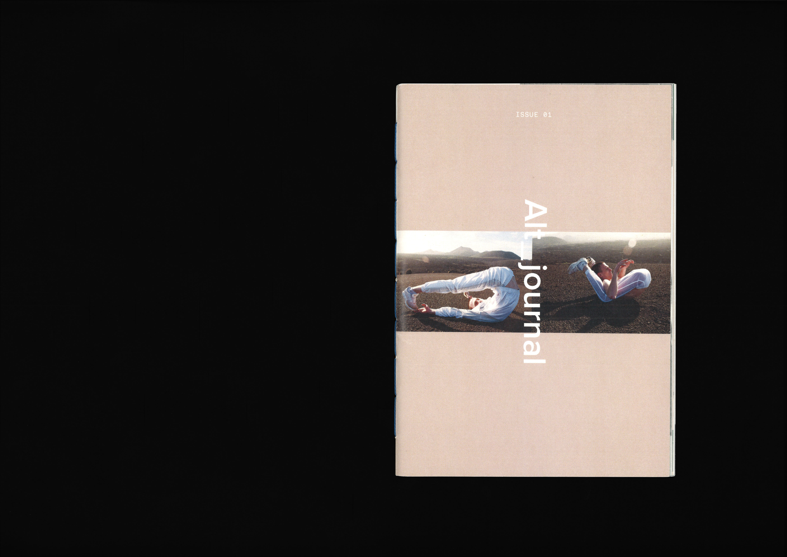
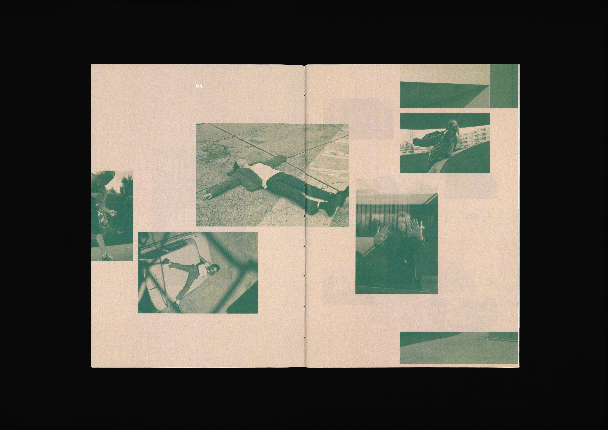
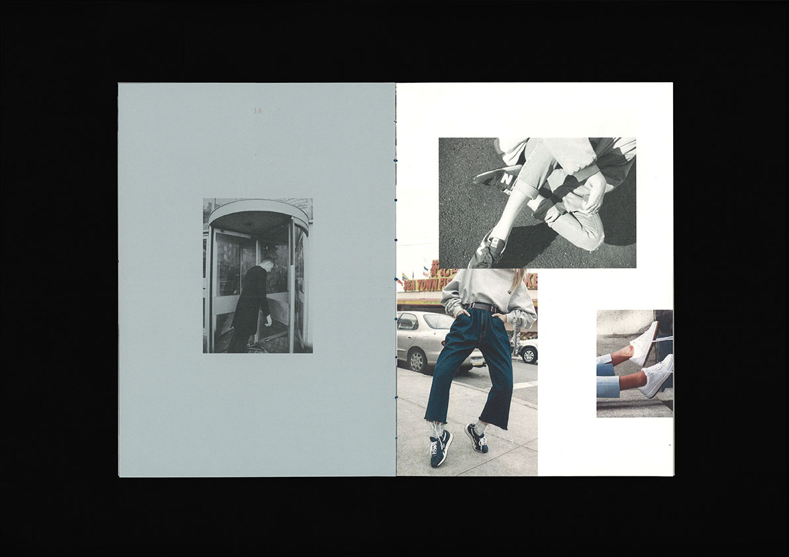
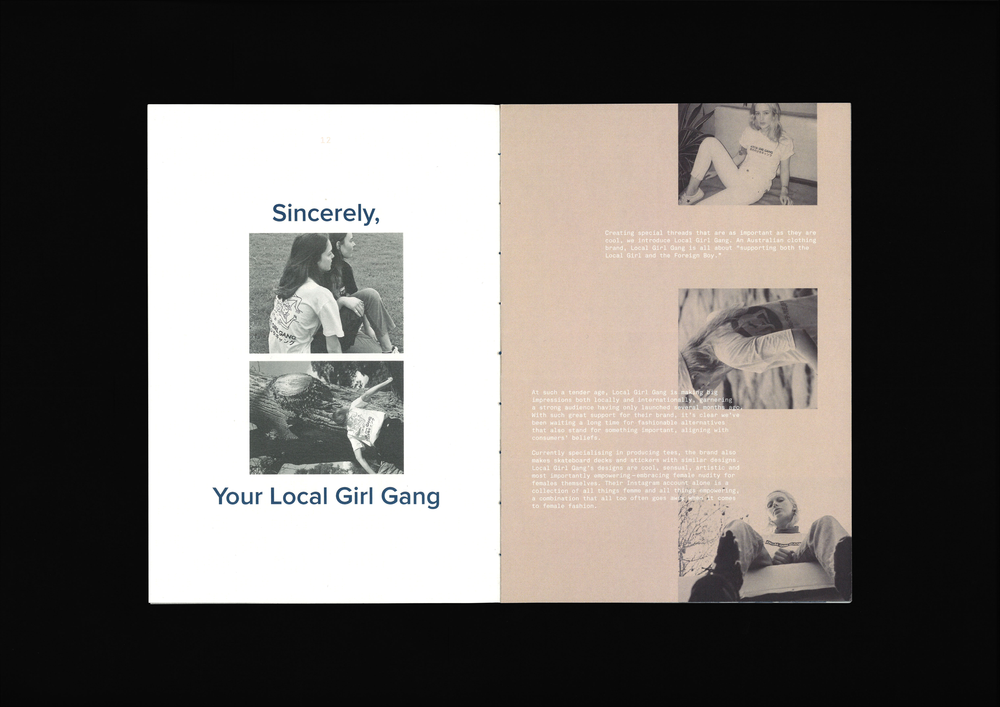
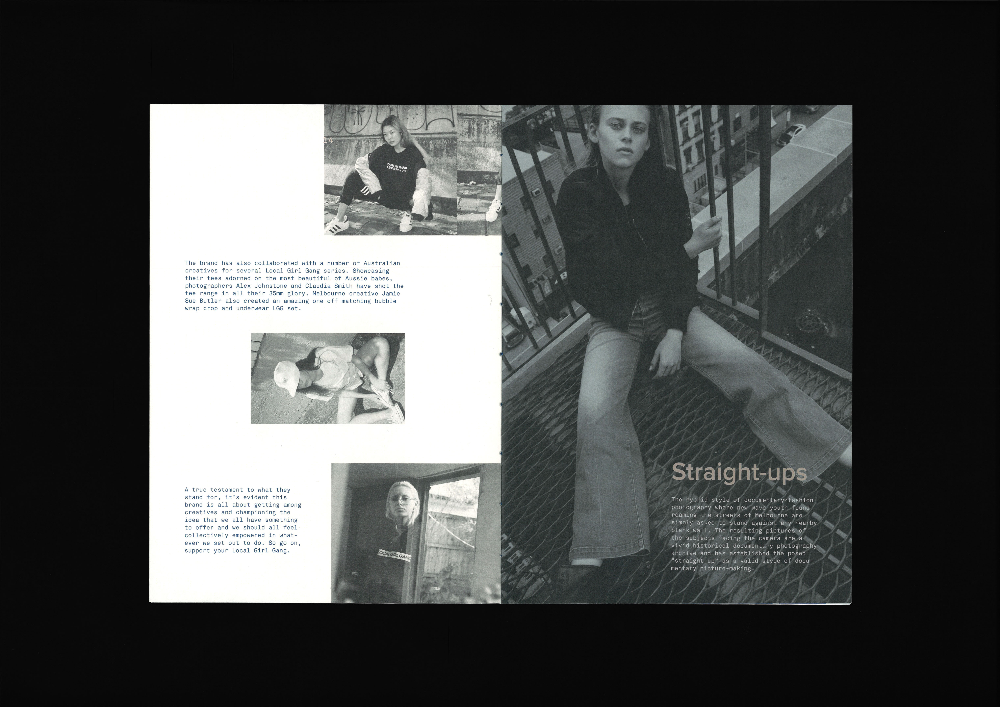
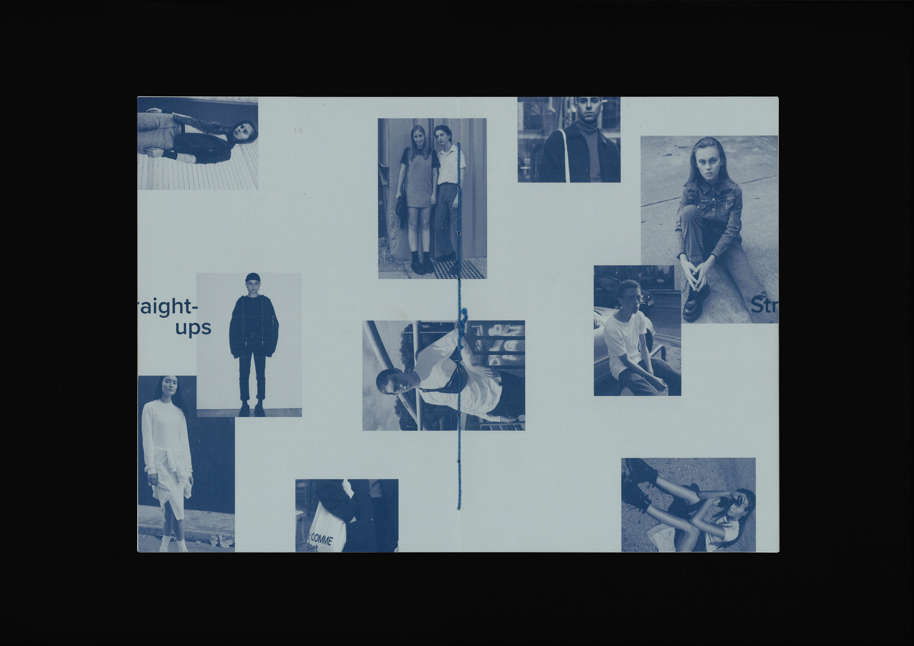
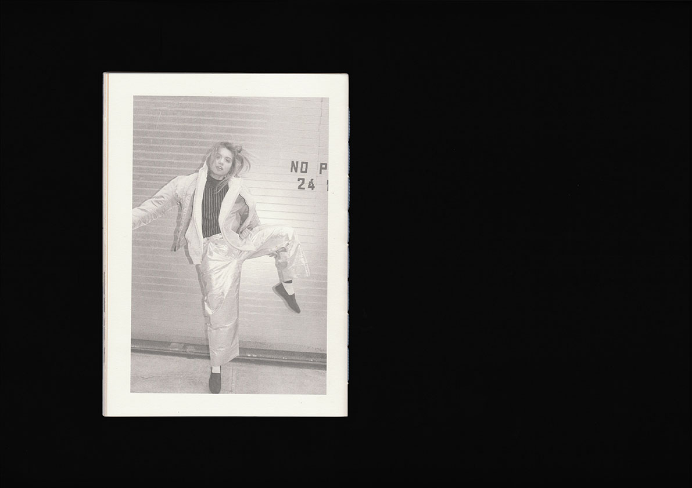

1
1







Mavericks, 2016
Saddle-stitch Publication / 148 x 210 mm / 32 pp
A publication titled Alt that explores and celebrates alternative fashion, lifestyle and culture. Documented in an unconventional layout, this zine inspires ‘out of the box’ thinking, promotes individual self expression and gives a voice to local design talent. All images sourced from worldwide web.
Saddle-stitch Publication / 148 x 210 mm / 32 pp
A publication titled Alt that explores and celebrates alternative fashion, lifestyle and culture. Documented in an unconventional layout, this zine inspires ‘out of the box’ thinking, promotes individual self expression and gives a voice to local design talent. All images sourced from worldwide web.